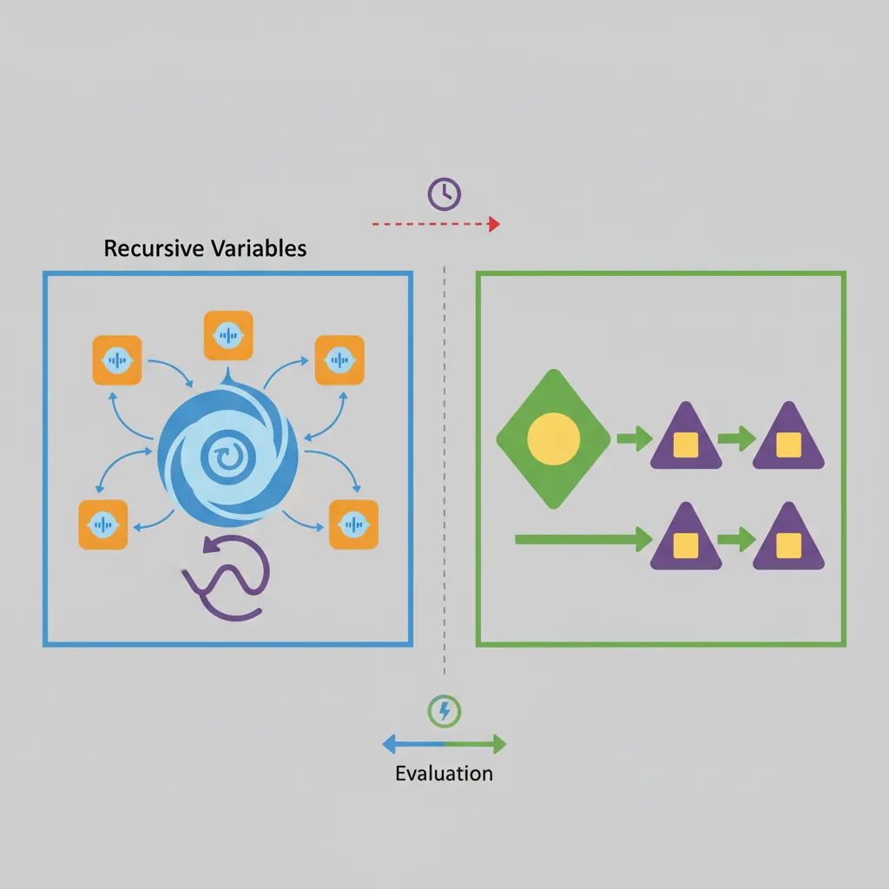
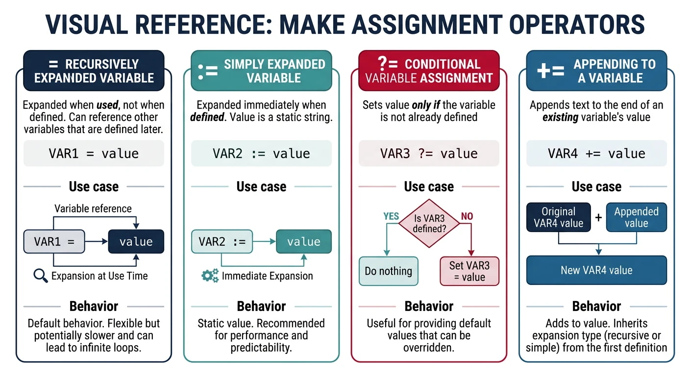
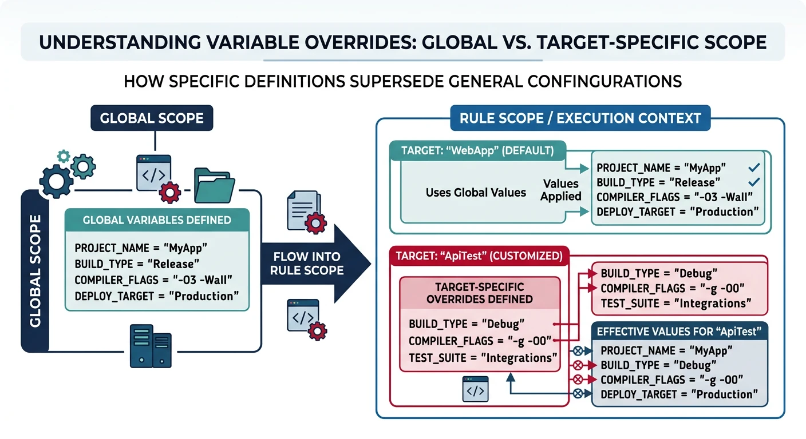
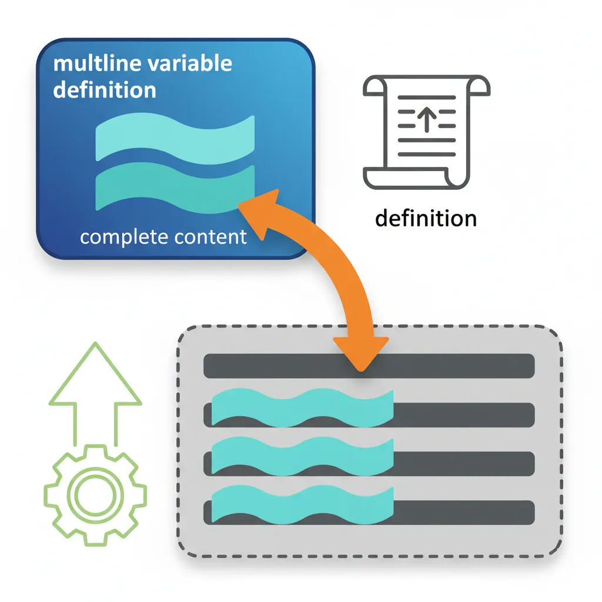

We use cookies to enhance your browsing experience, serve personalized content, and analyze our traffic. By clicking "Accept All", you consent to our use of cookies. See our Privacy Policy for more information.
GNU Make Mastery Part 3: Variables, Expansion & Scope
February 19, 2026Wasil Zafar22 min read
Master the full Make variable system: recursive (=) vs simply-expanded (:=) variables, conditional assignment (?=), append (+=), CLI overrides, target-specific variables, and multiline define/endef macros.
Part 3 of 16 — GNU Make Mastery Series. We've covered build system foundations (Part 1) and rule anatomy (Part 2). Now we tackle the variable system — the most nuanced part of the Make language, and the source of many subtle bugs in real Makefiles.
Make has two fundamentally different kinds of variables. Choosing the wrong one is a common source of infinite loops, stale values, and confusing behaviour in large Makefiles.

Recursive variables re-evaluate on every use; simply-expanded variables evaluate once at assignment
Recursive Variables (=)
A recursive variable stores its value as a literal string. Every time it is expanded (referenced with $(VAR)), Make re-evaluates the right-hand side from scratch at that moment. This means a recursive variable can reference variables that haven't been defined yet.
# Recursive — value is not evaluated until $(CFLAGS) is expanded
CFLAGS = -Wall $(EXTRA_FLAGS)
EXTRA_FLAGS = -O2
# When $(CFLAGS) is expanded, Make evaluates the whole string again:
# → -Wall -O2 ✓ works even though EXTRA_FLAGS was defined after CFLAGS
Danger: Recursive variables can cause infinite loops if a variable's definition references itself: CFLAGS = $(CFLAGS) -O2 — Make will loop forever expanding $(CFLAGS) → $(CFLAGS) -O2 → $(CFLAGS) -O2 -O2 → …
Simply-Expanded Variables (:=)
A simply-expanded variable is evaluated once, at the point of assignment. The result is stored as a flat string. All forward references to undefined variables expand to empty.
# Simply-expanded — evaluated immediately at assignment time
CC := gcc
CFLAGS := -Wall -Wextra -std=c11
# Safe self-reference: append a flag
CFLAGS := $(CFLAGS) -O2 # ✓ works — expands the existing value, appends, stores result
Why the Difference Matters
Rule of Thumb
When to Use Each
Use Case
Operator
Reason
Compiler flags (CC, CFLAGS)
:=
Fast, predictable, safe self-append
Source/object lists
:=
File lists should be fixed at parse time
Assembled strings from later-defined vars
=
Need deferred evaluation
Reusable macros / define blocks
=
Template-style deferred expansion
Default recommendation: use := for everything unless you specifically need deferred evaluation.
Sample Source Files
Self-contained examples: Variable and expansion examples in this part reference a small three-file project. Copy these files alongside your Makefile to build and run every snippet yourself.
main.c
/* main.c — entry point */
#include <stdio.h>
#include "utils.h"
int main(void) {
utils_greet("Make Variables");
return 0;
}
Sets the variable only if it has not already been set (including by the environment or CLI). This is ideal for providing defaults that users can override.

Make's four assignment operators: recursive (=), simple (:=), conditional (?=), and append (+=)
# Set defaults that the caller can override
CC ?= gcc # use gcc unless CC is already in the environment
PREFIX ?= /usr/local # default install prefix
BUILD ?= debug # default build type
# Usage: make BUILD=release PREFIX=/opt/myapp
Append Operator (+=)
Appends to an existing variable with a single space separator. If the variable was previously defined with :=, append uses simple expansion. If with =, it remains recursive.
CFLAGS := -Wall -Wextra # start with base flags
CFLAGS += -std=c11 # += appends with a space → -Wall -Wextra -std=c11
CFLAGS += -g # append again → -Wall -Wextra -std=c11 -g
SRCS := main.c utils.c # initial source list
SRCS += network.c # add another file → main.c utils.c network.c
CLI Overrides & Environment
Variables set on the Make command line override assignments inside the Makefile (unless the Makefile uses override). This is how you pass build configuration without editing the Makefile.
# In the Makefile:
CC ?= gcc
CFLAGS := -Wall -O2
BUILD ?= debug
ifeq ($(BUILD),release)
CFLAGS += -O3 -DNDEBUG
else
CFLAGS += -g -DDEBUG
endif
# Override from CLI:
make CC=clang # use Clang instead of GCC
make BUILD=release # enable release optimisation
make CC=arm-linux-gnueabihf-gcc BUILD=release # cross-compile release
# Force override even if Makefile uses override keyword:
make CFLAGS="-O0 -g3"
Environment Variable Export
# Export a variable to all sub-make processes and shell commands
export BUILD_DIR := $(CURDIR)/build
export PATH := $(PATH):/opt/toolchain/bin
# Export all Make variables to the environment
.EXPORT_ALL_VARIABLES:
# Unexport a specific variable
unexport SENSITIVE_TOKEN
Scoped Variables
Target-Specific Variables
Variables can be scoped to a specific target (and its prerequisites). They override global values within that target's recipe.

Target-specific variables override global values only within the scope of that target's recipe
CFLAGS := -Wall -O2 # global flags used by all targets
# Override CFLAGS only for the debug target (and its prerequisites)
debug: CFLAGS := -Wall -O0 -g -DDEBUG # target-specific: replaces global value
debug: myapp
@echo "Built debug version with $(CFLAGS)"
# Override for a single object file only
special.o: CFLAGS += -fno-strict-aliasing # appends to global; relaxes aliasing rules
special.o: special.c
$(CC) $(CFLAGS) -c $< -o $@ # $< = special.c, $@ = special.o
Pattern-Specific Variables
Like target-specific variables, but applied to all targets matching a pattern.
# All .o files compiled from test_*.c get extra sanitizer flags
test_%.o: CFLAGS += -fsanitize=address,undefined
# All .o files get position-independent code flag
%.o: CFLAGS += -fPIC
Multiline Variables (define/endef)
define/endef defines a variable containing newlines — useful for reusable command sequences (macros) that can be called or expanded inline.

Multiline variables defined with define/endef expand their complete content into recipe blocks
# Define a reusable compilation macro (multi-line variable)
define COMPILE_C
@echo " CC $@" # $@ expands to the target filename at recipe time
$(CC) $(CFLAGS) -c $< -o $@ # $< expands to the first prerequisite (.c file)
endef
# Use it in a pattern rule — $(COMPILE_C) expands to both lines above
%.o: %.c
$(COMPILE_C)
# Multi-line variable for a build banner
define BUILD_BANNER
@echo "=============================="
@echo " Building $(TARGET) v$(VERSION)" # variables expanded when the macro runs
@echo "=============================="
endef
all: $(TARGET)
$(BUILD_BANNER) # expands the entire 3-line block into this recipe
Pro Tip: Prefix recipe lines inside define blocks with @ to suppress echoing, just as you would in normal recipes. The entire macro expands as if its lines were written directly in the rule.
Hands-On Milestone
Milestone: By the end of Part 3 you should be able to:
✅ Write a Makefile configurable via CLI: make BUILD=release CC=clang
✅ Switch between debug and release flag sets using ifeq on a variable
✅ Use += to accumulate source files across Makefile sections
✅ Use target-specific variables to build one target with special flags
# Parameterised Makefile — try: make, make BUILD=release, make CC=clang BUILD=release
# ── Variables (? = set only if not already defined on CLI) ──
CC ?= gcc # allow caller to override compiler
BUILD ?= debug # default build type
TARGET := myapp
SRCS := main.c utils.c
OBJS := $(SRCS:.c=.o) # .c → .o substitution
# ── Common flags ────────────────────────────────────
CFLAGS := -Wall -Wextra -std=c11
# ── Build-type flags (chosen by ifeq conditional) ──
ifeq ($(BUILD),release)
CFLAGS += -O3 -DNDEBUG # max optimisation, disable assert()
LDFLAGS += -s # strip symbols from binary
else
CFLAGS += -O0 -g3 -DDEBUG # no optimisation, full debug info
endif
.PHONY: all clean info
# ── Default target ──
all: $(TARGET)
# ── Link ──
$(TARGET): $(OBJS)
$(CC) $(CFLAGS) $(LDFLAGS) -o $@ $^ # $@ = target, $^ = all .o files
# ── Compile (pattern rule: any .c → .o) ──
%.o: %.c
$(CC) $(CFLAGS) -c $< -o $@ # $< = the .c source file
clean:
rm -f $(TARGET) $(OBJS)
info:
@echo "CC = $(CC)"
@echo "BUILD = $(BUILD)"
@echo "CFLAGS = $(CFLAGS)"
@echo "LDFLAGS = $(LDFLAGS)"
@echo "TARGET = $(TARGET)"
@echo "SRCS = $(SRCS)"
@echo "OBJS = $(OBJS)"
# --- Try different configurations ---
make # default: debug build with gcc
make info # display all variable values
make BUILD=release # optimised release build
make BUILD=release info # see release flags
make CC=clang BUILD=release # use clang with release flags
make CC=clang BUILD=release info # verify clang + release settings
make clean # remove artefacts
Continue the Series
Part 4: Automatic Variables & Pattern Rules
Use $@, $<, $^, and pattern rules to compile any number of source files automatically without repetition.